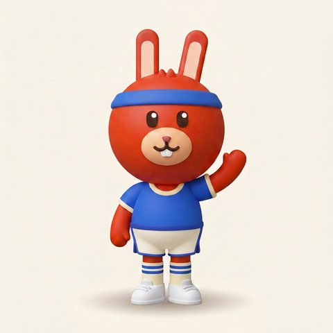
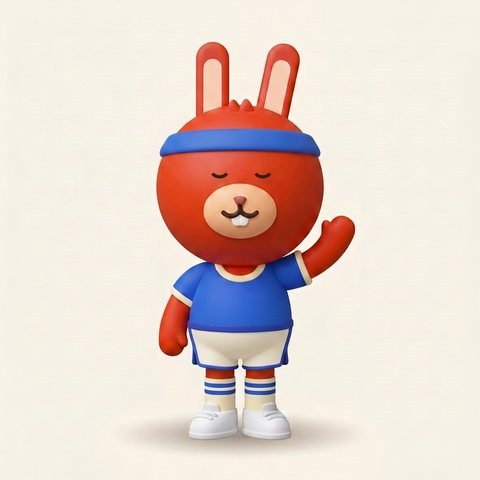

Chat
Rotation


Your rotation
Saved on this device. Tap a shoe to talk to Mo about it.
+ Add a shoe
Mo estimates mileage from what you tell it, so it says “probably.”
Mo
Add a shoe you run in
Chat
Rotation